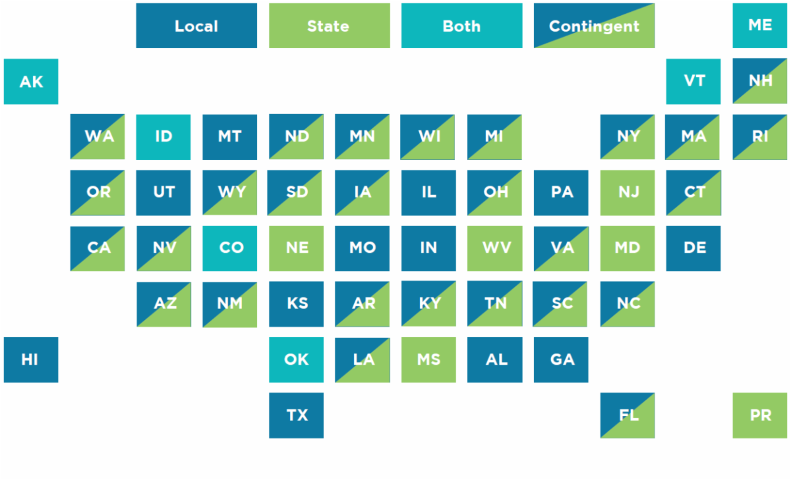
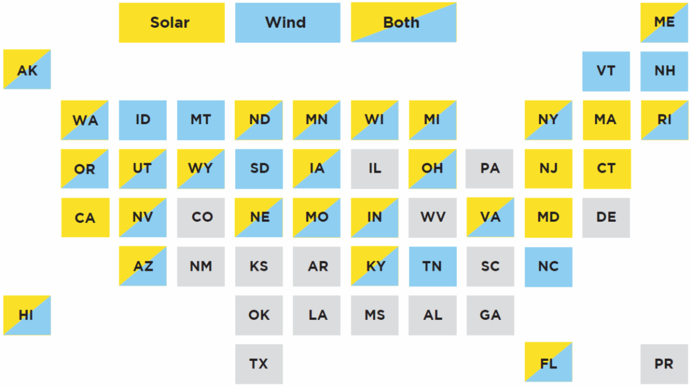

Michigan policy
Plans
\(A^2ZERO\) — Building a just transition to community-wide carbon neutrality by 2030.
Public meetings
MPSC Renewable Energy and Energy Storage Siting Meeting 04-26-2024
Legislation
Passed
Public Act No. 233, Approved by the Governor, November 28, 2023
- Expands renewables siting authority to the MPSC for wind farms with a nameplate capacity over 100 MW and solar farms with a nameplate capacity over 50 MW
- Directed MPSC staff to engage with developers, local governments, and experts to produce recommendations for filings, ordinance guidance, and more.
PA 229
- Increases the energy waste reduction target for utilities, requires program participation for cooperative and municipal utilities, and requires spending on low-income customers
- Directed MPSC staff to work with utilities, state government, and low-income advocacy groups to develop income verification strategies and program coordination to minimize barriers to participation
PA 235
- Increases the RES to 50% by 2030 and 60% by 2035 and requires 100% clean energy by 2040
- Distributed Generation (DG) floor increase to 10%
- Establish a 2,500-megawatt storage standard by 2030
- Requires that MPSC study and report electric issues unique to the Upper Peninsula (UP)
- Set dates for all Michigan electricity providers to file amended REPs in 2024 and 2025
- Seek comments on issues related to the DG cap and other relevant matters
- Directed staff to draft a proposal to aid in determining a standard methodology for determining energy suppliers’ energy storage targets and to develop a report on energy storage resources. They will also require IOUs to file energy storage reports
- Directed staff to engage with UP utilities and interconnection groups to develop the study, conduct at least one public hearing in the UP, and provide an opportunity for public comments
PA 231
- Allows MPSC to consider climate, equity, and affordability in Integrated Resource Plans (IRPs)
- Directed staff to commence studies on the potential for energy waste reduction, transportation electrification, demand response, buildings, and industry. Directed staff to update IRP filing requirements.
In the works
The Michigan Association of Planning (MAP) Law Committee were approached by legislators in April 2024 seeking simple fixes to PA 233 that wouldn’t change the meaning/intent of the law, but would make it clearer to implement and resolve some of the ambiguities. Sarah Mills was part of a MAP subcommittee that worked to draft these. Most of these changes are what appeared in the staff straw proposal. MAP is continuing to work with the legislators, MAC, MTA, and MML. PDF
News
Michigan Gov. Gretchen Whitmer might notch a big climate win
Clean energy package policy changes earn a mixed response from environmental advocates
Opinion
Michigan’s system to approve green energy projects is broken
Reports
Roadmap to Clean & Equitable Power in Michigan By University of Michigan Law School Problem Solving Initiative Course - Winter 2024
MPPS Report: Most Michigan local government officials say control over renewable energy projects should stay local
Laws in Order: An Inventory of State Renewable Energy Siting Policies
Before a large-scale solar or wind project can be built, its developers face the complicated siting and permitting processes. A project could require approvals from multiple levels of government (federal, tribal, state, and local) that consider project aesthetics, economics, land use, and effects on water quality and wildlife habitat.
To simplify this complex web of energy regulations for policymakers, developers, and renewable energy stakeholders, Lawrence Berkeley National Laboratory and the U.S. Department of Energy’s (DOE) Office of Renewable Energy and Energy Efficiency collaborated with a research team that included the Regulatory Assistance Project, Clean Air Task Force, and the Consensus Building Institute to publish a new inventory of state renewable energy siting policies, permitting authorities, and an accompanying interactive map that profiles all 50 states plus Puerto Rico.
The inventory includes summary material, findings, and individual reports for each state.
It also provides an improved understanding of the regulatory landscape for large-scale wind and solar siting across U.S. states and territories by documenting, among other aspects:
The entity or entities in each state or territory that have jurisdictional authority to make siting and permitting decisions and set standards for large-scale renewables siting and construction; The presence or lack thereof of siting and permitting timelines; Public involvement requirements; and The availability of permitting guides and model ordinances to support local jurisdictional decision-making.
A key finding in the report is that a majority of states (37) give local governments the authority to set siting standards (tip heights, setbacks, etc.). Beyond that, our research confirms that state approaches to siting and permitting can vary widely and are often difficult to categorize.
Additional observations from the report include:
The level of government with principal authority for renewable energy siting and permitting often depends on project size. In 27 states, principal authority for siting and permitting depends on project size (shown below as “contingent”), with larger projects typically sited at the state level—though project size thresholds differ significantly from state to state.
 Figure 1: Principal renewable energy siting and permitting authority categories by state
Note: “Local” refers to states where local governments have principal jurisdiction over renewable energy siting and permitting; “State” refers to when a state or territorial government has principal jurisdiction; “Both” refers to scenarios in which both the state and the local government have some authority; and, “Contingent” scenarios are when either the state or local government has principal authority, nearly always depending upon the size of the project.
Timelines for permitting vary widely. In 31 states, there are defined timelines for the permitting process, ranging from 30 days to a year. These timelines are often triggered by a specific initiation point, such as the developer applying for permission to build a project.
Most states have public involvement requirements. In 34 states – mostly those where the state has authority by default or based on project – the state has a statutory or regulatory requirement within the permitting process to include public meetings or hearings.
Published guidance is available in many states. We found that 29 states have published guides for siting and permitting solar, 33 for wind, and 25 for both solar and wind (Figure 2). These guides typically summarize the siting process, involved parties, and relevant policies, are often published by a state agency, but can sometimes be the product of nonprofits or working groups serving a state or region.
 (Figure 2: Renewable energy permitting guides available)
Model ordinances are available in many states. Because local governments have a key role in setting siting rules in most states, some have developed model ordinances for local authorities to use as guides. Model ordinances are available in 27 states for solar, 18 for wind, and 15 for both.
Local authorities typically control siting standards. Solar or wind projects must meet standards to manage land use and regulate their development and construction. For example, there may be restrictions on how much land a project can use, where it can be built, or on wind turbine height and noise. These standards can be included in state law or a local zoning ordinance, but our research finds that 37 states give local authorities the jurisdiction to set siting standards.
Secondary sources
(Reviews of research)
Peer-reviewed research
Renewable energy requirements on the ballot: An analysis of county-level voting results
Preserving Agriculture through Wind Energy Development: A Study of the Social, Economic, and Land Use Effects of Windfarms on Rural Landowners and Their Communities by Sarah Mills, PhD Thesis, University of Michigan, 2015 - See passage on Ohio siting authority, starts on page 164 of the pdf/149 marked on the bottom of the page